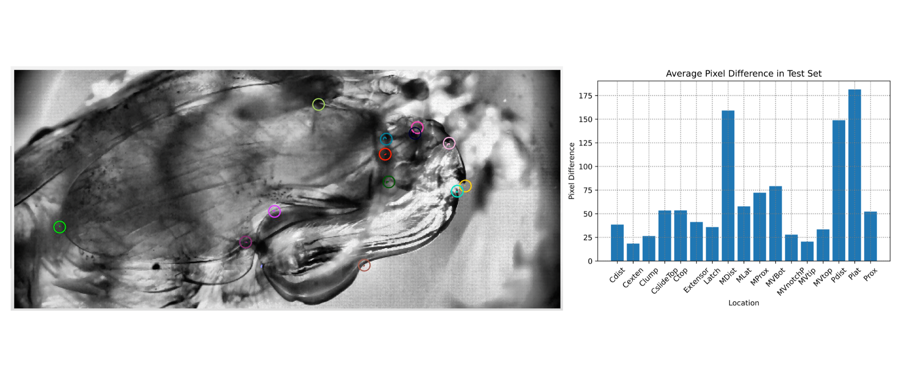

| Paper PDF |

|
Mantis shrimp appendages are known to strike at some of the fastest speeds known to biology. A major bottleneck to researching their strike patterns is the time needed to label key features on their claws as they strike. In this project, we created a model to predict the locations of 17 key features when given an unlabeled video. We created 5 ResNet DeepLabCut models using 122 mantis shrimp videos, and evaluated results using a 1000-iteration ResNet-50 model. The model was most accurate in predicting C- and MV-series locations, and least accurate in predicting M- and P-series locations. The model is currently not a satisfactory method for replacing manual labeling, but there is a lot of potential for improvement. Sample video of tracked mantis shrimp strike: click here. |
|
|
| Paper: |
Code and Data:
|